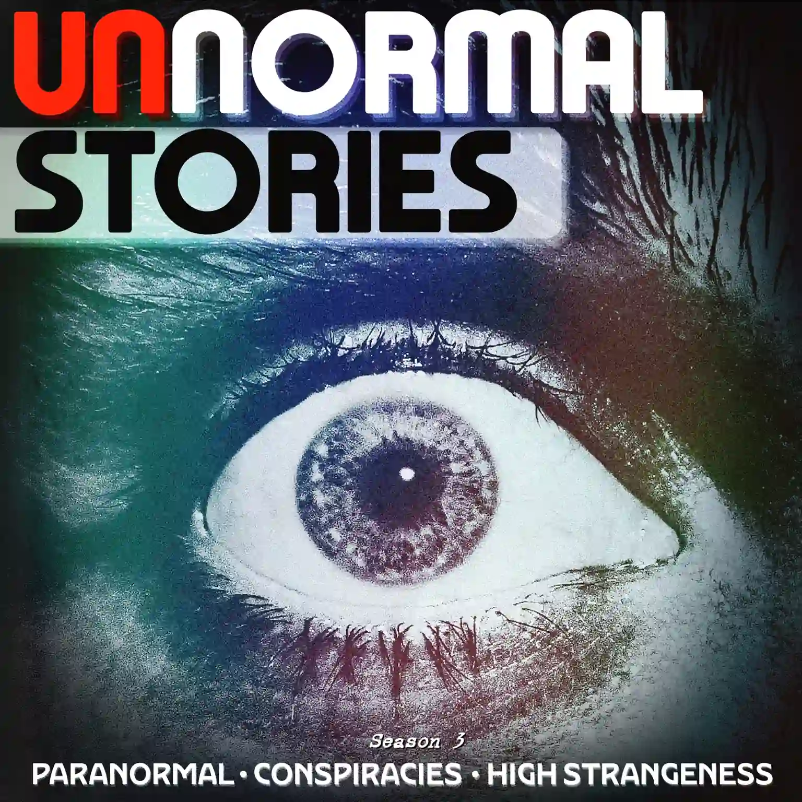
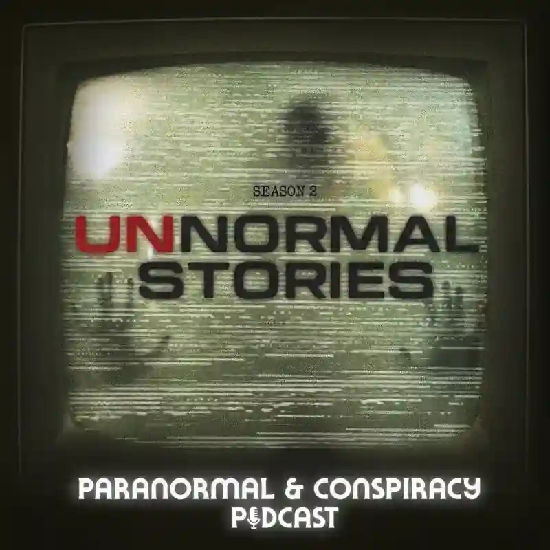
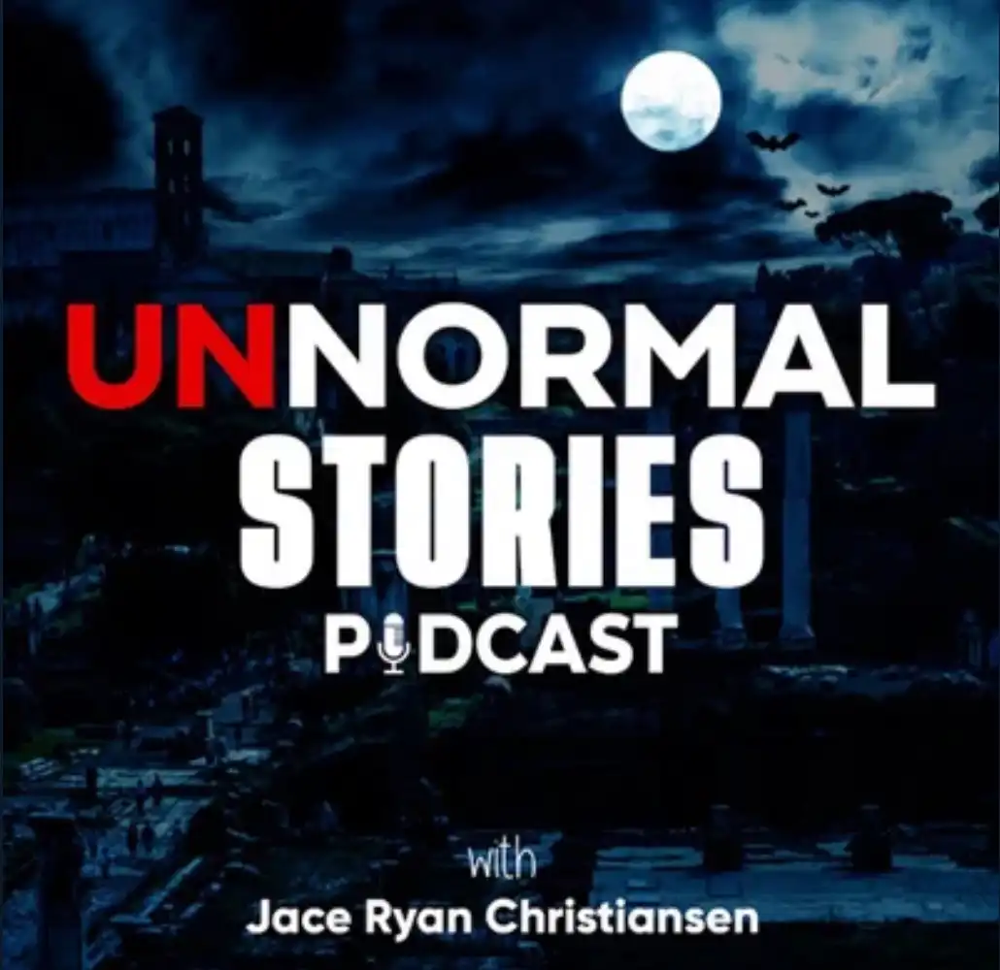

Season 1
The original run — eerie cases, paranormal themes, and the beginning of the archive.

 Unnormal Stories
Unnormal Stories
PARANORMAL • CONSPIRACIES • HIGH STRANGENESS
Research, strange history, unexplained encounters, and the cases that refuse to sit neatly in one explanation.

SHOW EVOLUTION
Unnormal Stories has moved through a few different looks, but the core idea stays the same: follow strange stories, compare the evidence, and chase what does not fit.
The original run — eerie cases, paranormal themes, and the beginning of the archive.
A darker transition era with deeper mystery, weird history, and a more cinematic tone.
The current identity — high strangeness, conspiracies, and a rebuilt home for the show.
CURRENT DIRECTION
The latest eye artwork becomes the main face of the brand, while earlier cover art stays preserved in the archive as part of the show’s history.
View the cover archiveSEASON 03
New investigations. New stories. Same search for the Unnormal truth.
WORKING TITLE
Latest episode notes, listening links, evidence, and sources will live here.
HAVE YOU SEEN
Ghosts • strange lights • impossible coincidences • unexplained encounters
LISTENER STORIES
Send firsthand experiences, local legends, unusual cases, photographs, recordings, or leads.
FOLLOW THE SIGNAL
Platform links can be swapped in as Season 3 accounts are finalized.

